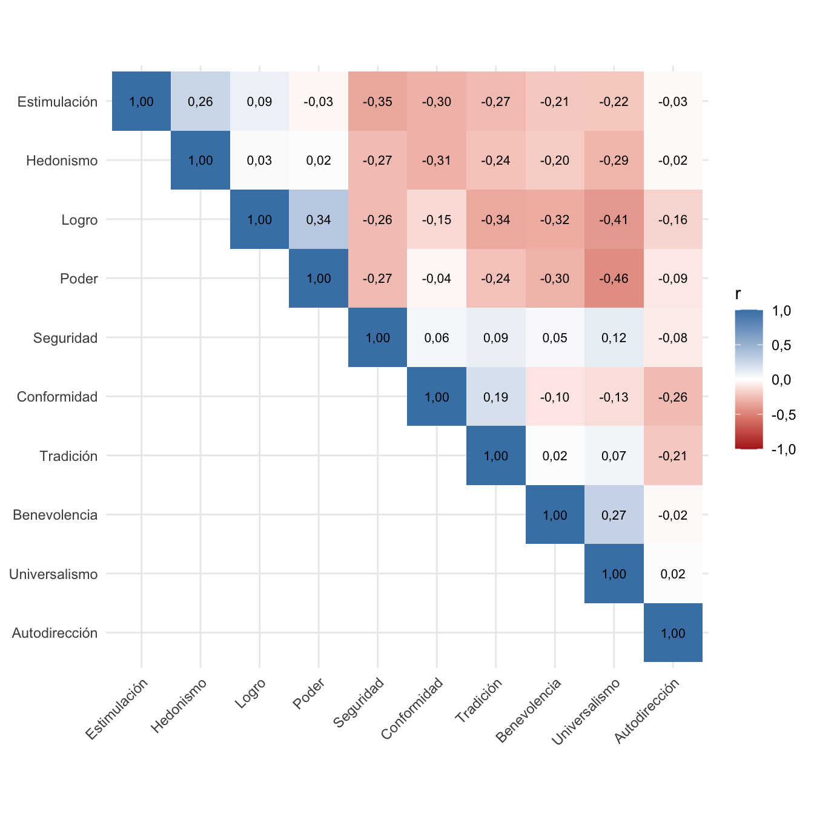
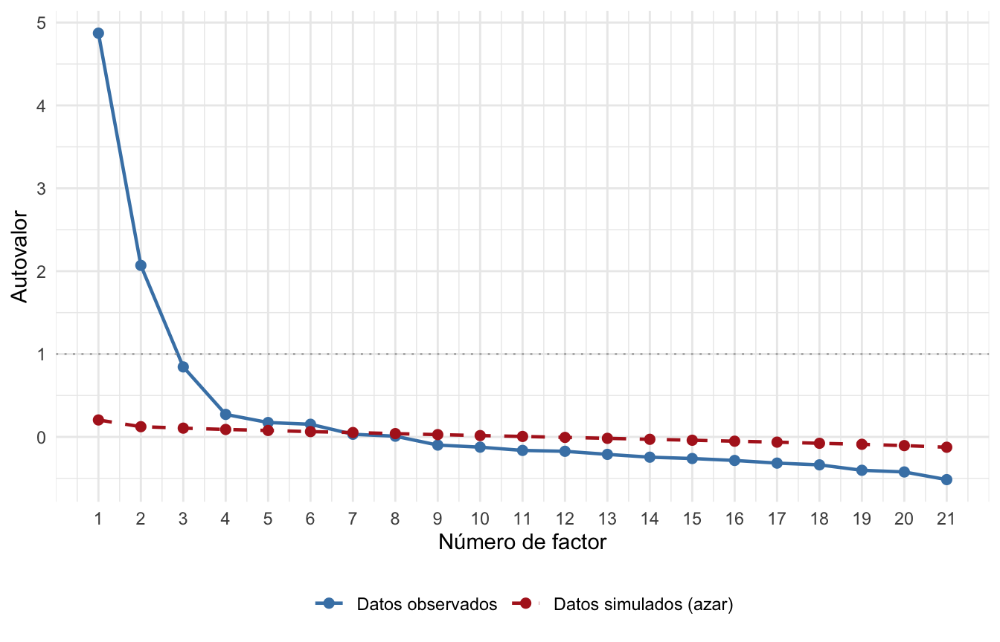
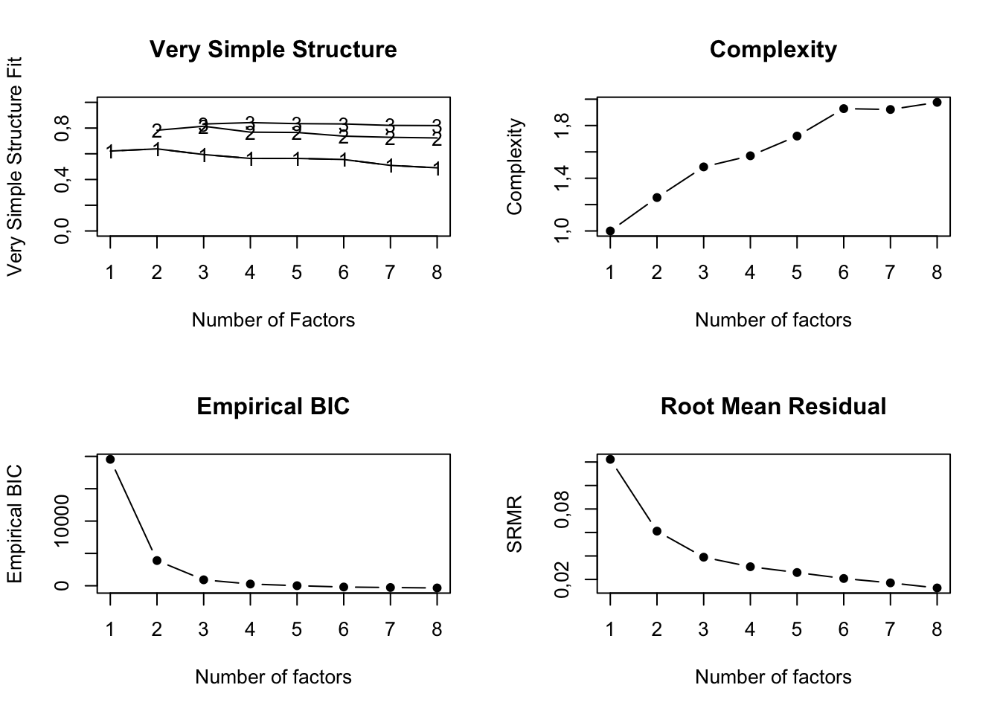
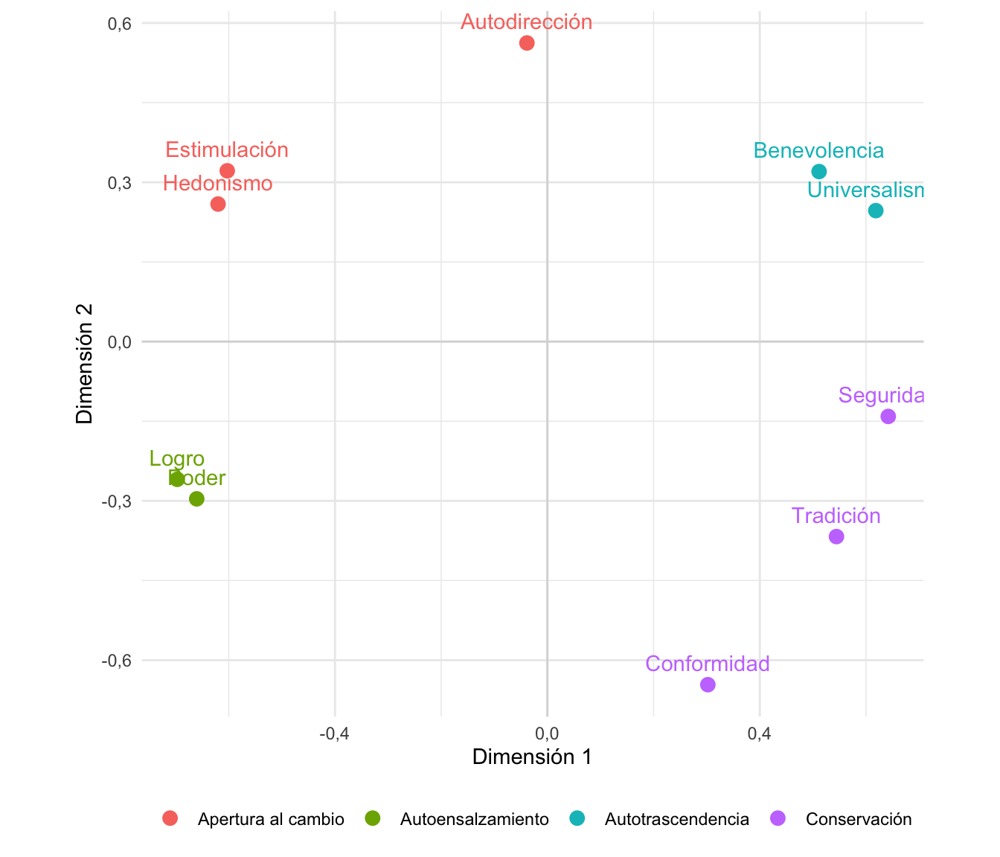

load("input/data/completas-280125.RData")
items <- paste0("values_", sprintf("%02d", 1:21))Análisis factorial del PVQ-21 de Schwartz en EDUMERCO
Informe
1 Presentación
Este informe presenta el análisis factorial de la escala de valores de Schwartz (PVQ-21) utilizando los datos del estudio EDUMERCO.
1.1 Modelo de valores de Schwartz
Schwartz (2012) propone que existen diez valores básicos que se reconocen en distintas culturas, y que lo que distingue a las personas no es si los tienen, sino la importancia relativa que les asignan, es decir, su jerarquía de valores. Cada valor expresa una motivación distinta:
| Valor | Qué busca | Ítems del PVQ-21 en EDUMERCO | Dimensión |
|---|---|---|---|
| Autodirección | Independencia de pensamiento y de acción: elegir, crear y explorar | 01, 11 | Apertura al cambio |
| Estimulación | Entusiasmo, novedad y desafíos en la vida | 06, 15 | Apertura al cambio |
| Hedonismo | Placer y gratificación personal | 10, 21 | Apertura al cambio / autoensalzamiento |
| Logro | Éxito personal demostrando competencia según estándares sociales | 04, 13 | Autoensalzamiento |
| Poder | Estatus, prestigio y control sobre personas y recursos | 02, 17 | Autoensalzamiento |
| Seguridad | Seguridad, armonía y estabilidad de la sociedad, de las relaciones y de uno mismo | 05, 14 | Conservación |
| Conformidad | Contener acciones que puedan dañar a otros o violar expectativas y normas sociales | 07, 16 | Conservación |
| Tradición | Respeto y compromiso con las costumbres e ideas de la cultura o la religión | 09, 20 | Conservación |
| Benevolencia | Preservar y mejorar el bienestar de las personas cercanas | 12, 18 | Autotrascendencia |
| Universalismo | Comprensión, tolerancia y protección del bienestar de todas las personas y de la naturaleza | 03, 08, 19 | Autotrascendencia |
- Los valores vecinos son compatibles entre sí, porque persiguen motivaciones similares.
- Los valores opuestos se encuentran en mayor tensión, porque perseguir uno suele implicar alejarse del otro.
Esta organización se resume en dos oposiciones que forman cuatro dimensiones de orden superior:
- Apertura al cambio (autodirección, estimulación, hedonismo) frente a conservación (seguridad, conformidad, tradición): independencia y disposición al cambio frente a orden, estabilidad y continuidad.
- Autotrascendencia (universalismo, benevolencia) frente a autoensalzamiento (poder, logro, hedonismo): preocupación por el bienestar de otros frente a la búsqueda del propio éxito y dominio.
Hedonismo comparte rasgos de apertura al cambio y de autoensalzamiento, por lo que se ubica entre ambas dimensiones.
Como la teoría se refiere a prioridades relativas y no a niveles absolutos de acuerdo, el análisis de la relación entre valores utiliza puntajes centrados en el promedio de cada persona.
1.1.1 El PVQ-21
El PVQ (Portrait Values Questionnaire) describe brevemente a una persona y pide a quien responde que indique cuánto se parece a ella. La versión de 21 ítems aplicada en EDUMERCO mide cada valor con dos ítems (tres en el caso de universalismo). Cada ítem se responde en una escala de 1 a 6, donde 1 = “Muy poco parecido a mí” y 6 = “Muy parecido a mí”.
2 Preparación de los datos
2.1 Carga de los datos
Se cargan los datos de EDUMERCO Adultos y se seleccionan los 21 ítems del PVQ-21 (values_01 a values_21).
2.2 Recodificación de datos perdidos
Las respuestas 7 (“No sé”) y 8 (“Preferiría no responder”) se recodifican como NA.
vals_raw <- data %>%
select(all_of(items)) %>%
mutate(across(everything(), as.numeric))
# Cuántas respuestas se recodifican (antes de transformarlas)
n_codigos <- sum(vals_raw == 7 | vals_raw == 8, na.rm = TRUE)
n_celdas <- sum(!is.na(vals_raw))
vals <- vals_raw %>%
mutate(across(everything(), ~ na_if(na_if(.x, 7), 8)))Se recodificaron 2.777 respuestas (3,8% del total de respuestas registradas).
2.3 Selección de casos
Se conservan las personas que respondieron al menos 15 de los 21 ítems.
n_total <- nrow(vals)
vals <- vals %>% filter(rowSums(!is.na(pick(everything()))) >= 15)
n_usados <- nrow(vals)Se utilizan 3.357 de 3.484 personas (96,4%).
2.4 Definición de los valores
Cada valor de Schwartz se define como el conjunto de ítems que lo miden, en el orden del círculo teórico.
valores10 <- list(
estimulacion = c("06", "15"), hedonismo = c("10", "21"),
logro = c("04", "13"), poder = c("02", "17"),
seguridad = c("05", "14"), conformidad = c("07", "16"),
tradicion = c("09", "20"), benevolencia = c("12", "18"),
universalismo = c("03", "08", "19"), autodireccion = c("01", "11")
)
nombres <- c(estimulacion = "Estimulación", hedonismo = "Hedonismo",
logro = "Logro", poder = "Poder", seguridad = "Seguridad",
conformidad = "Conformidad", tradicion = "Tradición",
benevolencia = "Benevolencia", universalismo = "Universalismo",
autodireccion = "Autodirección")
# Puntaje por valor: promedio de sus ítems
puntajes_valores <- function(df) {
map_dfc(valores10, \(it) rowMeans(df[paste0("values_", it)], na.rm = TRUE))
}
# Tabla ítem -> valor
item_valor <- imap_dfr(
valores10,
\(it, v) tibble(item = paste0("values_", it), valor = nombres[[v]])
)2.5 Versión centrada de las respuestas
Se construye además una versión centrada, restando a cada respuesta el promedio de la persona, para considerar la importancia relativa de los valores.
vals_c <- vals - rowMeans(vals, na.rm = TRUE)3 Estadísticos descriptivos
3.1 Por ítem
descriptivos <- psych::describe(vals)
descriptivos %>%
select(n, mean, sd, min, max, skew, kurtosis) %>%
mutate(across(where(is.numeric), ~ round(.x, 2))) %>%
kbl(
col.names = c("N", "Media", "DE", "Mín.", "Máx.", "Asimetría", "Curtosis"),
format.args = list(big.mark = ".", decimal.mark = ",")
) %>%
kable_styling(full_width = FALSE)| N | Media | DE | Mín. | Máx. | Asimetría | Curtosis | |
|---|---|---|---|---|---|---|---|
| values_01 | 3.318 | 3,87 | 1,24 | 1 | 6 | -0,09 | -0,55 |
| values_02 | 3.335 | 2,44 | 1,26 | 1 | 6 | 0,96 | 0,40 |
| values_03 | 3.342 | 4,81 | 1,19 | 1 | 6 | -0,93 | 0,19 |
| values_04 | 3.317 | 2,95 | 1,38 | 1 | 6 | 0,50 | -0,63 |
| values_05 | 3.334 | 4,78 | 1,23 | 1 | 6 | -0,88 | 0,02 |
| values_06 | 3.332 | 3,88 | 1,38 | 1 | 6 | -0,09 | -0,90 |
| values_07 | 3.289 | 3,55 | 1,49 | 1 | 6 | -0,01 | -1,04 |
| values_08 | 3.339 | 4,32 | 1,21 | 1 | 6 | -0,48 | -0,35 |
| values_09 | 3.334 | 4,55 | 1,23 | 1 | 6 | -0,61 | -0,35 |
| values_10 | 3.329 | 3,74 | 1,36 | 1 | 6 | -0,07 | -0,84 |
| values_11 | 3.336 | 4,55 | 1,26 | 1 | 6 | -0,60 | -0,44 |
| values_12 | 3.336 | 4,70 | 1,15 | 1 | 6 | -0,66 | -0,28 |
| values_13 | 3.317 | 3,25 | 1,42 | 1 | 6 | 0,34 | -0,84 |
| values_14 | 3.308 | 4,77 | 1,33 | 1 | 6 | -0,97 | 0,10 |
| values_15 | 3.330 | 3,11 | 1,39 | 1 | 6 | 0,38 | -0,70 |
| values_16 | 3.312 | 4,09 | 1,35 | 1 | 6 | -0,26 | -0,84 |
| values_17 | 3.298 | 3,35 | 1,41 | 1 | 6 | 0,26 | -0,89 |
| values_18 | 3.329 | 4,62 | 1,21 | 1 | 6 | -0,69 | -0,14 |
| values_19 | 3.331 | 4,76 | 1,21 | 1 | 6 | -0,78 | -0,12 |
| values_20 | 3.310 | 3,68 | 1,53 | 1 | 6 | -0,11 | -1,04 |
| values_21 | 3.310 | 3,59 | 1,39 | 1 | 6 | 0,07 | -0,87 |
Las medias de los ítems van de 2,44 (values_02, poder) a 4,81 (values_03, universalismo). Los ítems de poder y logro están entre los de menor media (2,44 a 3,35), junto con values_15 (estimulación, 3,11), mientras que los de universalismo, seguridad y benevolencia concentran las medias más altas (4,62 a 4,81). El N por ítem fluctúa entre 3.289 y 3.342 por datos perdidos, y values_07 (conformidad) es el que tiene menos respuestas. Las distribuciones son moderadamente asimétricas (asimetría entre −0,97 y 0,96), con las mayores asimetrías en values_14 (−0,97), values_02 (0,96) y values_03 (−0,93), y las curtosis se ubican entre −1,04 y 0,40, sin desviaciones severas de la normalidad. Todos los ítems utilizan el rango completo de la escala (1 a 6).
3.2 Por valor
resumen_valores <- imap_dfr(valores10, \(it, v) {
p <- rowMeans(vals[paste0("values_", it)], na.rm = TRUE)
tibble(
valor = nombres[[v]],
n = sum(!is.na(p)),
promedio = mean(p, na.rm = TRUE),
de = sd(p, na.rm = TRUE)
)
}) %>%
arrange(desc(promedio))
resumen_valores %>%
mutate(across(c(promedio, de), ~ round(.x, 2))) %>%
kbl(
col.names = c("Valor", "N", "Media", "DE"),
align = "lrrr",
format.args = list(big.mark = ".", decimal.mark = ",")
) %>%
kable_styling(bootstrap_options = c("striped", "hover"), full_width = FALSE)| Valor | N | Media | DE |
|---|---|---|---|
| Seguridad | 3.354 | 4,77 | 1,08 |
| Benevolencia | 3.352 | 4,66 | 1,00 |
| Universalismo | 3.357 | 4,63 | 0,91 |
| Autodirección | 3.356 | 4,21 | 1,03 |
| Tradición | 3.355 | 4,12 | 1,06 |
| Conformidad | 3.348 | 3,82 | 1,17 |
| Hedonismo | 3.353 | 3,67 | 1,20 |
| Estimulación | 3.353 | 3,50 | 1,19 |
| Logro | 3.349 | 3,10 | 1,25 |
| Poder | 3.355 | 2,90 | 1,08 |
Seguridad (4,77), benevolencia (4,66) y universalismo (4,63) son los valores con mayor puntaje promedio, mientras que logro (3,10) y poder (2,90) son los de menor puntaje. Las desviaciones estándar van de 0,91 (universalismo) a 1,25 (logro). Estos puntajes no están centrados, por lo que reflejan tanto el nivel general de acuerdo de las personas con los ítems como la importancia relativa que le asignan a cada valor.
4 Relación entre los valores
Para esto se usan los puntajes centrados (cada respuesta menos el promedio de la persona), que es la corrección que recomienda Schwartz. Al centrar aparecen correlaciones negativas por construcción, así que es una exploración y no una prueba de la estructura circular.
scores <- puntajes_valores(vals_c)
R <- cor(scores, use = "pairwise.complete.obs")
orden <- names(valores10) # orden del círculo teórico
R_plot <- R
R_plot[upper.tri(R_plot)] <- NA
as.data.frame(as.table(R_plot)) %>%
filter(!is.na(Freq)) %>%
mutate(Var1 = factor(nombres[as.character(Var1)], levels = nombres[orden]),
Var2 = factor(nombres[as.character(Var2)], levels = rev(nombres[orden]))) %>%
ggplot(aes(Var1, Var2, fill = Freq)) +
geom_tile() +
geom_text(aes(label = fmt(Freq)), size = 2.8) +
scale_fill_gradient2(low = "firebrick", mid = "white", high = "steelblue",
limits = c(-1, 1)) +
labs(x = NULL, y = NULL, fill = "r") +
coord_fixed() +
theme_minimal() +
theme(axis.text.x = element_text(angle = 45, hjust = 1))
Varios valores vecinos correlacionan positivamente (poder–logro, 0,34; benevolencia–universalismo, 0,27; estimulación–hedonismo, 0,26; conformidad–tradición, 0,19) y algunos opuestos correlacionan negativamente (poder–universalismo, -0,46; logro–universalismo, -0,41; estimulación–seguridad, -0,35). Autodirección tiene correlaciones cercanas a cero con casi todos los valores, y seguridad se asocia poco con conformidad y tradición.
5 Análisis factorial exploratorio
La teoría de Schwartz (2012) propone una estructura de diez valores y cuatro dimensiones de orden superior, pero esa estructura no necesariamente se reproduce en cualquier muestra o versión del instrumento, sobre todo en una versión corta como el PVQ-21, con dos ítems por valor (tres en universalismo).
Por esta razón se utiliza un análisis factorial exploratorio (AFE), que permite examinar cómo se agrupan los ítems a partir de sus correlaciones, sin imponer de antemano qué ítem pertenece a qué factor. Esto permite contrastar después la estructura que muestran los datos con la estructura teórica. Como los ítems se responden en una escala ordinal de seis categorías, el análisis se realiza sobre la matriz de correlaciones policóricas.
Esta sección presenta el análisis factorial exploratorio: la adecuación de los datos para factorizar, la decisión del número de factores (análisis paralelo y comparación de soluciones de 2 a 6 factores) y la interpretación de la solución de 4 factores, a partir de sus cargas factoriales y de las correlaciones entre factores. Finalmente, se evalúa la estructura circular de los valores mediante escalamiento multidimensional.
5.1 Adecuación de los datos (KMO y Bartlett)
cor_poly <- psych::polychoric(vals)
# Si la matriz no es definida positiva, se suaviza para poder factorizarla
if (any(eigen(cor_poly$rho)$values <= 0)) {
cor_poly$rho <- psych::cor.smooth(cor_poly$rho)
}
kmo <- KMO(cor_poly$rho)
bart <- cortest.bartlett(cor_poly$rho, n = nrow(vals))El índice KMO global fue de 0,88 (entre 0,80 y 0,93 a nivel de ítem), y la prueba de Bartlett fue significativa (χ²(210) = 22614,3, p < 0,001), por lo que los datos son adecuados para un análisis factorial.
5.2 Número de factores
n_iter <- 100
dir.create("output", showWarnings = FALSE)
archivo_pa <- sprintf("output/pa_%d_%d.rds", n_iter, n_usados)
if (file.exists(archivo_pa)) {
pa <- readRDS(archivo_pa)
} else {
pa <- psych::fa.parallel(vals, fa = "fa", fm = "minres", cor = "poly",
n.iter = n_iter, plot = FALSE)
saveRDS(pa, archivo_pa)
}dplyr::tibble(
factor = seq_along(pa$fa.values),
`Datos observados` = pa$fa.values,
`Datos simulados (azar)` = pa$fa.sim
) %>%
tidyr::pivot_longer(-factor, names_to = "serie", values_to = "autovalor") %>%
ggplot2::ggplot(ggplot2::aes(x = factor, y = autovalor, color = serie, linetype = serie)) +
ggplot2::geom_line(linewidth = 0.8) +
ggplot2::geom_point(size = 2) +
ggplot2::geom_hline(yintercept = 1, color = "grey70", linetype = "dotted") + # Criterio de Kaiser (autovalor > 1)
ggplot2::scale_color_manual(values = c("Datos observados" = "steelblue",
"Datos simulados (azar)" = "firebrick")) +
ggplot2::scale_linetype_manual(values = c("Datos observados" = "solid",
"Datos simulados (azar)" = "dashed")) +
ggplot2::scale_x_continuous(breaks = seq_along(pa$fa.values)) + # Marcadores exactos en los factores (1, 2, 3...)
ggplot2::labs(x = "Número de factor", y = "Autovalor", color = NULL, linetype = NULL) +
ggplot2::theme_minimal() +
ggplot2::theme(legend.position = "bottom")
La línea azul representa los autovalores de los datos observados y la línea roja punteada los autovalores esperables por azar. Se retienen los factores cuyo autovalor observado supera al simulado, lo que resulta en 6 factores. La línea gris punteada horizontal marca el autovalor 1, usado como referencia del criterio de Kaiser.
5.3 Comparación de soluciones
El análisis paralelo tiende a sugerir más factores de los interpretables cuando hay muchos casos. Por eso se contrasta con el criterio MAP de Velicer y con índices de ajuste de soluciones de 2 a 6 factores, estimadas sobre la matriz policórica con rotación oblicua (oblimin).
nf <- nfactors(cor_poly$rho, n = 8, fm = "minres", n.obs = nrow(vals))
k_map <- which.min(nf$map)
ks <- 2:6
fits <- map(ks, \(k) fa(cor_poly$rho, nfactors = k, n.obs = nrow(vals),
fm = "minres", rotate = "oblimin")) |>
set_names(ks)La figura compara cuatro criterios para decidir el número de factores. El Very Simple Structure alcanza sus valores más altos con pocos factores (entre 2 y 4, según la complejidad permitida a cada ítem). La complejidad promedio de los ítems aumenta a medida que se agregan factores. El BIC empírico y el residuo cuadrático medio (RMSR) disminuyen con cada factor adicional, con la mayor mejora entre 1 y 3 factores y ganancias menores desde ahí. En conjunto, estos criterios apuntan a soluciones de pocos factores, mientras que el análisis paralelo sugiere 6, por lo que se complementan con la tabla de ajuste y con la interpretación de las cargas.
map_dfr(ks, \(k) {
m <- fits[[as.character(k)]]
tibble(
k = k,
var = sum(m$Vaccounted["Proportion Var", ]) * 100,
tli = m$TLI,
rmsea = m$RMSEA[["RMSEA"]],
rmsr = m$rms,
bic = m$BIC
)
}) %>%
kbl(
col.names = c("Factores", "Varianza explicada (%)", "TLI", "RMSEA", "RMSR", "BIC"),
digits = c(0, 1, 2, 3, 3, 1),
format.args = list(decimal.mark = ",", big.mark = ".")
) %>%
kable_styling(bootstrap_options = c("striped", "hover"), full_width = FALSE)| Factores | Varianza explicada (%) | TLI | RMSEA | RMSR | BIC |
|---|---|---|---|---|---|
| 2 | 34,5 | 0,75 | 0,089 | 0,061 | 3.305,6 |
| 3 | 39,8 | 0,84 | 0,072 | 0,039 | 1.549,8 |
| 4 | 42,8 | 0,88 | 0,063 | 0,031 | 805,2 |
| 5 | 44,9 | 0,89 | 0,058 | 0,026 | 497,9 |
| 6 | 46,9 | 0,91 | 0,053 | 0,021 | 217,2 |
El ajuste mejora de forma sostenida al agregar factores. Con 3 factores el RMSEA (0,072) y el RMSR (0,039) ya están dentro de los valores aceptables, mientras que el TLI llega a 0,88 con 4 factores y 0,89 con 5, algo por debajo del 0,90 usado como referencia. La solución de 6 factores es la primera que lo supera (TLI = 0,91), con una varianza explicada de 46,9%. El BIC disminuye con cada factor adicional, aunque la reducción se hace menor a medida que se agregan factores (1.756 puntos entre 2 y 3 factores, 281 entre 5 y 6). Los índices de ajuste por sí solos no permiten decidir entre las soluciones de 4 y de 6 factores, por lo que la elección depende también de la interpretabilidad de las cargas y de su correspondencia con la teoría.
# Decision del numero de factores a interpretar.
k_final <- 4
efa_final <- fits[[as.character(k_final)]]5.4 Solución de 4 factores
cargas <- unclass(efa_final$loadings) %>%
as.data.frame() %>%
rownames_to_column("item") %>%
left_join(item_valor, by = "item") %>%
mutate(
h2 = efa_final$communality[item],
principal = max.col(abs(across(starts_with("MR")))),
cmax = apply(abs(across(starts_with("MR"))), 1, max)
) %>%
arrange(principal, desc(cmax)) %>%
select(item, valor, starts_with("MR"), h2)
cargas %>%
mutate(
across(starts_with("MR"),
~ cell_spec(ifelse(abs(.x) < 0.30, "", fmt(.x)),
bold = abs(.x) >= 0.40)),
h2 = fmt(h2)
) %>%
kbl(escape = FALSE, align = "llrrrrr",
col.names = c("Ítem", "Valor teórico", paste0("F", seq_len(k_final)), "h²")) %>%
kable_styling(bootstrap_options = c("striped", "hover"), full_width = FALSE)| Ítem | Valor teórico | F1 | F2 | F3 | F4 | h² |
|---|---|---|---|---|---|---|
| values_03 | Universalismo | 0,75 | 0,48 | |||
| values_12 | Benevolencia | 0,65 | 0,48 | |||
| values_19 | Universalismo | 0,61 | 0,41 | |||
| values_08 | Universalismo | 0,52 | 0,36 | |||
| values_11 | Autodirección | 0,50 | 0,39 | |||
| values_09 | Tradición | 0,48 | 0,39 | |||
| values_18 | Benevolencia | 0,48 | 0,39 | |||
| values_05 | Seguridad | 0,46 | 0,32 | 0,43 | ||
| values_14 | Seguridad | 0,45 | 0,37 | |||
| values_01 | Autodirección | 0,36 | 0,26 | |||
| values_21 | Hedonismo | 0,74 | 0,55 | |||
| values_15 | Estimulación | 0,73 | 0,58 | |||
| values_10 | Hedonismo | 0,58 | 0,48 | |||
| values_06 | Estimulación | 0,49 | 0,41 | |||
| values_04 | Logro | 0,79 | 0,59 | |||
| values_13 | Logro | 0,73 | 0,62 | |||
| values_02 | Poder | 0,54 | 0,40 | |||
| values_17 | Poder | 0,40 | 0,33 | |||
| values_16 | Conformidad | 0,58 | 0,45 | |||
| values_07 | Conformidad | 0,56 | 0,32 | |||
| values_20 | Tradición | 0,56 | 0,32 |
Se omiten cargas menores a 0,30 y se destacan en negrita las mayores o iguales a 0,40. La columna h² es la comunalidad de cada ítem.
Qué agrupa cada factor
- F1, valores prosociales: universalismo (03, 08, 19) y benevolencia (12, 18), junto con autodirección (11, 01), seguridad (05, 14) y un ítem de tradición (09). Cargas entre 0,36 y 0,75.
- F2, hedonismo y estimulación: ítems 21, 15, 10 y 06. Cargas entre 0,49 y 0,74.
- F3, poder y logro: ítems 04, 13, 02 y 17. Cargas entre 0,40 y 0,79.
- F4, conformidad y tradición: conformidad (16, 07) y el ítem 20 de tradición. Cargas entre 0,56 y 0,58.
Comparación con las cuatro dimensiones de Schwartz
- Autoensalzamiento (poder, logro): se reproduce con claridad en F3.
- Apertura al cambio (autodirección, estimulación, hedonismo): no aparece como un solo factor. Estimulación y hedonismo forman F2, y autodirección carga en F1.
- Conservación (seguridad, conformidad, tradición): se divide. Conformidad y el ítem 20 de tradición forman F4, mientras que seguridad y el ítem 09 de tradición cargan en F1.
- Autotrascendencia (universalismo, benevolencia): constituye el núcleo de F1, pero mezclada con autodirección y seguridad.
efa_final$Phi %>%
`colnames<-`(paste0("F", seq_len(k_final))) %>%
`rownames<-`(paste0("F", seq_len(k_final))) %>%
kbl(digits = 2, format.args = list(decimal.mark = ",")) %>%
kable_styling(full_width = FALSE)| F1 | F2 | F3 | F4 | |
|---|---|---|---|---|
| F1 | 1,00 | 0,30 | 0,06 | 0,40 |
| F2 | 0,30 | 1,00 | 0,51 | 0,16 |
| F3 | 0,06 | 0,51 | 1,00 | 0,20 |
| F4 | 0,40 | 0,16 | 0,20 | 1,00 |
La solución explica el 42,8% de la varianza, con TLI = 0,88, RMSEA = 0,063 y RMSR = 0,031.
Los factores se correlacionan entre 0,06 y 0,51, lo que justifica el uso de una rotación oblicua. La asociación más alta es entre el segundo y el tercer factor (0,51), seguida de la del primero con el cuarto (0,40). La más baja es entre el primero y el tercero (0,06), pese a que, según la teoría de Schwartz, estos grupos de valores (autotrascendencia y autoensalzamiento) son opuestos y se esperaría una relación negativa. Este resultado puede estar influido por el uso de respuestas sin centrar. Ninguna correlación se acerca a 1, por lo que los factores se distinguen entre sí.
Otros aspectos de la solución
- El ítem 05 (seguridad) tiene una carga cruzada de 0,32 en F4.
- Los dos ítems de tradición se separan: el 09 (humildad) carga en F1 y el 20 (tradiciones y costumbres) en F4.
- El ítem 01 (autodirección) es el más débil: carga 0,36 y su comunalidad es 0,26.
- Las comunalidades van de 0,26 a 0,62, es decir, los factores explican una proporción moderada de la varianza de los ítems.
- Los factores correlacionan entre sí; la relación más alta es entre F2 y F3 (0,51) y la siguiente, entre F1 y F4 (0,40).
Se puede decir que la estructura se aproxima parcialmente a la de Schwartz. Se recupera lo grueso (poder y logro; hedonismo y estimulación; conformidad y tradición), pero apertura al cambio y conservación no forman factores propios.
6 Estructura circular de los valores (MDS)
Para evaluar la estructura circular se aplica escalamiento multidimensional (MDS ordinal) sobre los diez puntajes centrados. Valores compatibles deberían quedar cerca y valores opuestos lejos, formando un círculo.
dimension <- c(
estimulacion = "Apertura al cambio", autodireccion = "Apertura al cambio",
hedonismo = "Apertura al cambio",
logro = "Autoensalzamiento", poder = "Autoensalzamiento",
seguridad = "Conservación", conformidad = "Conservación",
tradicion = "Conservación",
benevolencia = "Autotrascendencia", universalismo = "Autotrascendencia"
)
R_c <- cor(scores, use = "pairwise.complete.obs")
D <- sqrt(2 * (1 - R_c)) # distancia a partir de la correlación
set.seed(123)
mds_fit <- mds(D, ndim = 2, type = "ordinal")
coords <- as.data.frame(mds_fit$conf) %>%
rownames_to_column("clave") %>%
mutate(valor = nombres[clave], dimension = dimension[clave])ggplot(coords, aes(D1, D2, color = dimension, label = valor)) +
geom_hline(yintercept = 0, color = "grey85") +
geom_vline(xintercept = 0, color = "grey85") +
geom_point(size = 3) +
geom_text(vjust = -0.9, show.legend = FALSE) +
coord_fixed() +
labs(x = "Dimensión 1", y = "Dimensión 2", color = NULL) +
theme_minimal() +
theme(legend.position = "bottom")
El ajuste de la configuración fue de stress-1 = 0,039 (valores menores a 0,10 se consideran adecuados). Los valores, ordenados según su posición angular en el plano, quedan así:
coords %>%
mutate(angulo = atan2(D2, D1)) %>%
arrange(angulo) %>%
pull(valor) %>%
paste(collapse = " → ")[1] "Logro → Poder → Conformidad → Tradición → Seguridad → Universalismo → Benevolencia → Autodirección → Estimulación → Hedonismo"Al comparar este orden con el círculo teórico de Schwartz, los cuatro grupos de valores quedan en la secuencia esperada (apertura al cambio, autoensalzamiento, conservación y autotrascendencia), y hedonismo se ubica entre estimulación y logro, como predice la teoría. Hay diferencias dentro de los grupos seguridad aparece después de tradición, y universalismo y benevolencia en orden inverso al teórico. Con solo dos ítems por valor, el orden dentro de cada grupo es más inestable, por lo que el resultado se interpreta como consistente con la teoría en términos generales.
7 Conclusiones
Los datos son adecuados para el análisis factorial (KMO = 0,88 y prueba de Bartlett significativa).
El número de factores no queda definido por un único criterio. El análisis paralelo sugiere 6 factores y el criterio MAP 3. Los índices de ajuste mejoran con cada factor y solo la solución de 6 factores supera un TLI de 0,90. Se interpretó la solución de 4 factores, por su correspondencia con las cuatro dimensiones teóricas, y queda pendiente revisar la de 6.
La solución de 4 factores reproduce parcialmente la estructura de Schwartz. Poder y logro forman un factor claro (autoensalzamiento), y estimulación y hedonismo también. En cambio, universalismo, benevolencia, autodirección y seguridad se agrupan en un mismo factor, y los ítems de conservación se reparten entre dos factores.
El escalamiento multidimensional ordena los valores de forma consistente, en términos generales, con el círculo teórico: los cuatro grupos quedan en la secuencia esperada y hedonismo se ubica entre estimulación y logro. Las diferencias aparecen dentro de los grupos (seguridad, universalismo y benevolencia), lo que es esperable con solo dos ítems por valor.
8 Referencias
Schwartz, S. H. (2012). An Overview of the Schwartz Theory of Basic Values. Online Readings in Psychology and Culture, 2(1). https://doi.org/10.9707/2307-0919.1116